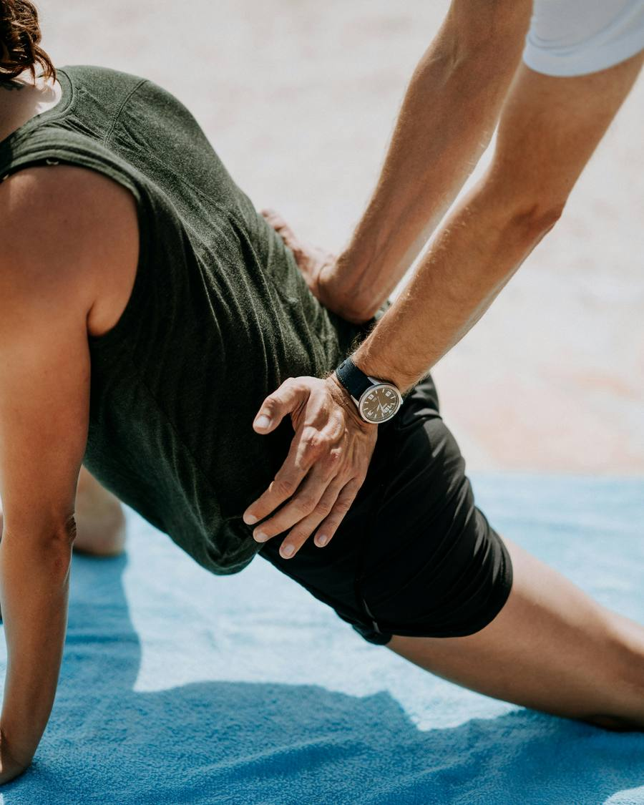
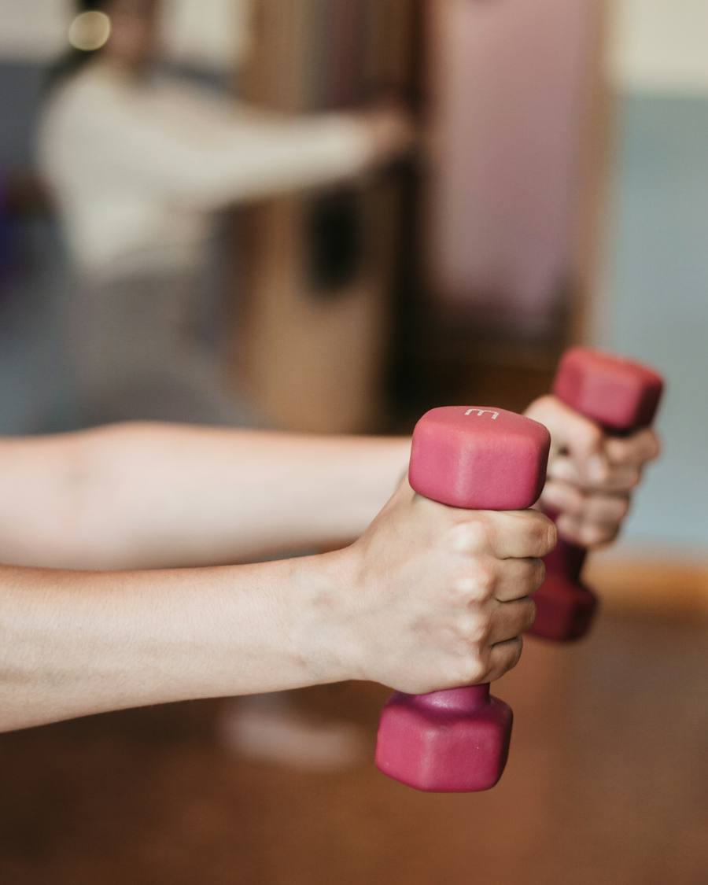
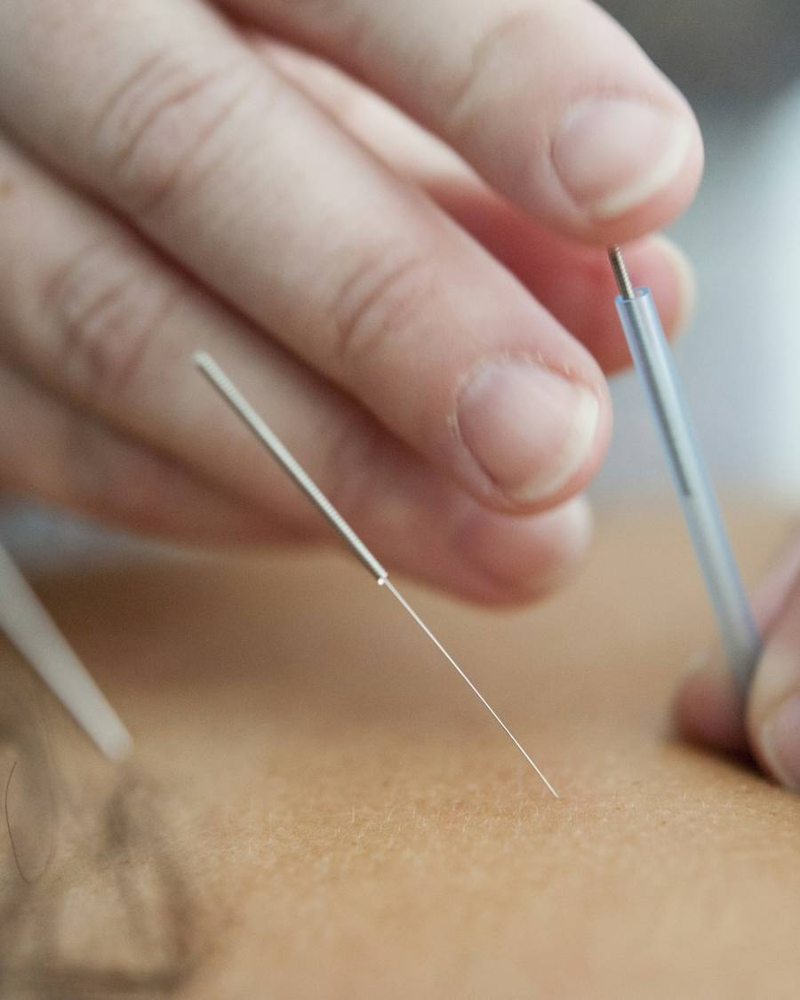
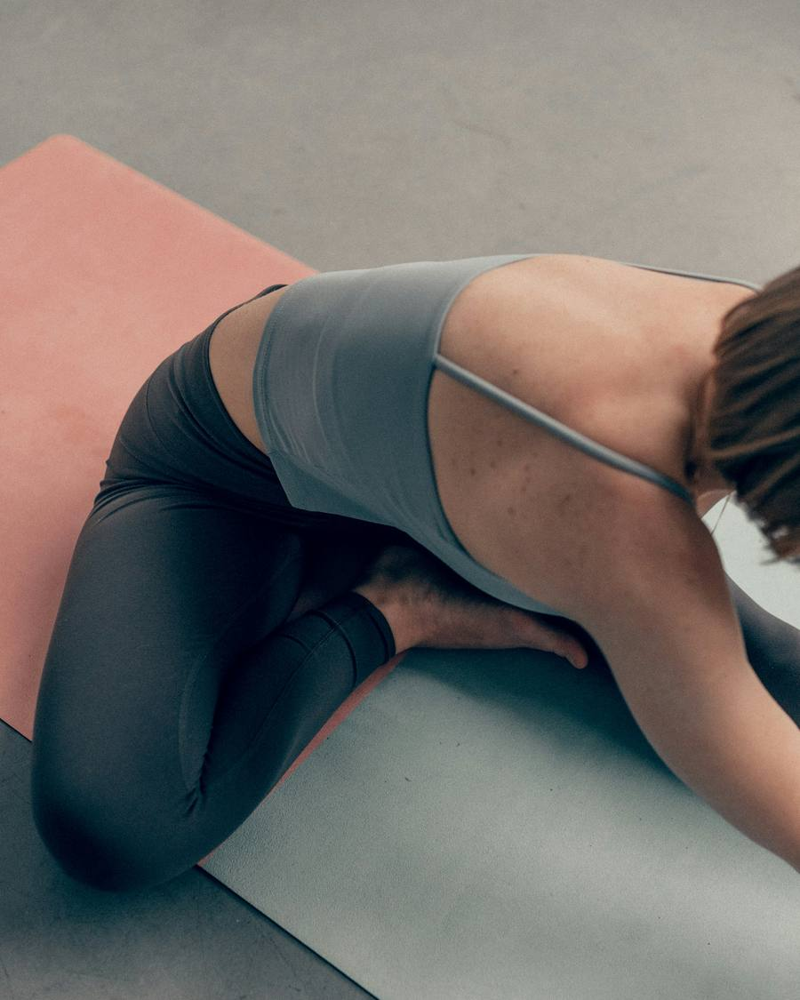

Primera valoración sin compromiso
Recupera. Muévete sin dolor.
Tratamos el dolor de raíz con un plan a tu medida, para que vuelvas a moverte con confianza. La cita la pides con Sofía, a cualquier hora.
- Primera visita
- Valoración sin compromiso
- Dónde
- Madrid
- Citas
- Sofía, asistente IA · demo
La clínica
No aplicamos protocolos genéricos: valoramos, tratamos y te acompañamos hasta que estás bien.
- 1
- Primera valoración sin compromiso, antes de decidir nada.
- 3
- Pasos en cada caso: valorar, tratar y acompañarte hasta el alta.
- 4
- Áreas de trabajo, de la fisioterapia deportiva al suelo pélvico.
01 · Servicios
Cuatro formas de volver a moverte
Cuéntale a Sofía qué necesitas y el equipo te llama para cerrar la cita.
-

Fisioterapia deportiva
Para lesiones y sobrecargas de quien entrena. Tratamos y te ayudamos a volver a tu actividad de forma progresiva.
-

Rehabilitación
Recuperación tras una lesión, una operación o un tiempo de inmovilización, con ejercicio terapéutico guiado.
-

Punción seca
Técnica para tratar puntos gatillo y contracturas, siempre dentro de un plan y después de la valoración.
-

Suelo pélvico
Valoración y trabajo del suelo pélvico en un entorno de confianza, con un plan adaptado a ti.
Descripciones de ejemplo para la demo. Sin precios: en la web real los pone la clínica.
02 · Tratamiento a tu medida
Vuelve a tu mejor versión
Desde la primera valoración hasta el alta, diseñamos un tratamiento pensado para ti y ajustamos cada sesión a tu evolución.
-
Valoración completa
Analizamos tu lesión y tu movilidad para entender el origen del dolor.
-
Tratamiento personalizado
Terapia manual, ejercicio terapéutico y técnicas específicas según tu caso.
-
Seguimiento cercano
Ajustamos cada sesión a tu evolución y te damos pautas para casa.

03 · Tu cita
Pide cita hablando con Sofía
Sofía es la asistente de IA de la clínica. Te pregunta qué necesitas, apunta tu nombre y tu teléfono, y el equipo te llama para cerrar la cita.
No da consejo médico: eso se resuelve en la valoración, con tu fisioterapeuta.
04 · Contacto
Empieza por una valoración
- Dónde
- Madrid
- Dirección real al convertir la demo
- Primera visita
- Valoración sin compromiso
- Pídela con Sofía o llamando
¿Te duele algo? Pide tu valoración. Sofía te atiende ahora, tarda menos que una llamada.